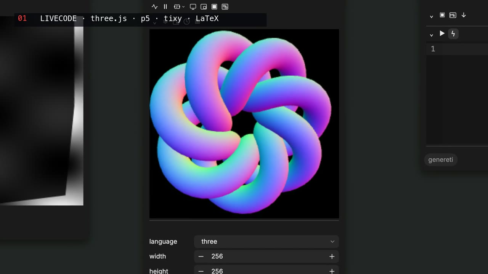
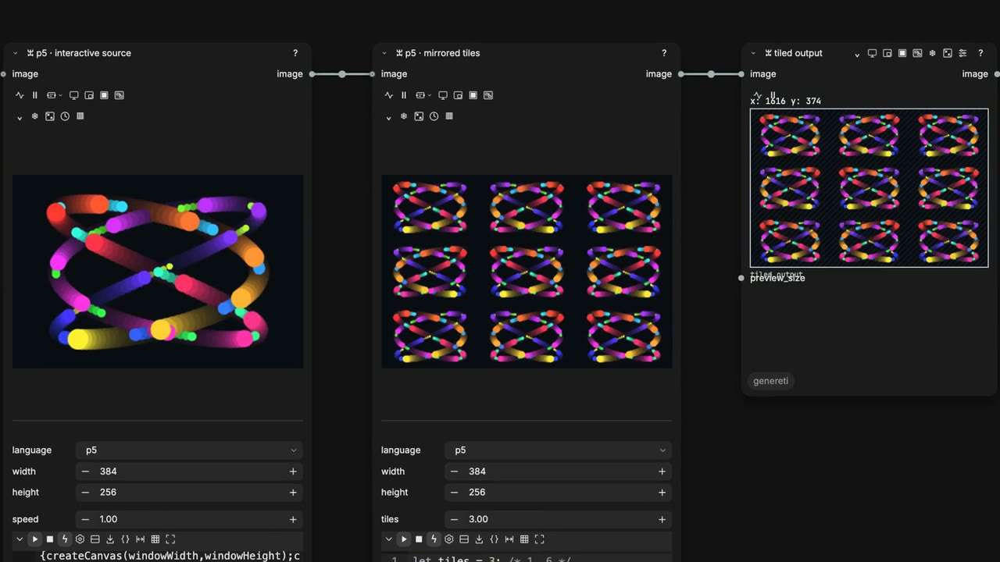
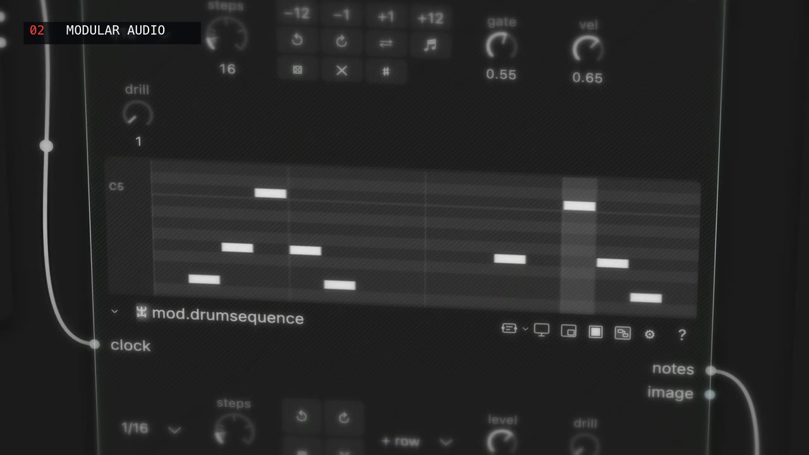
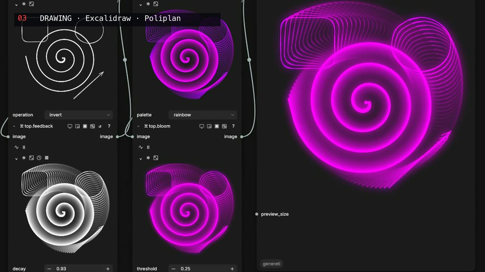
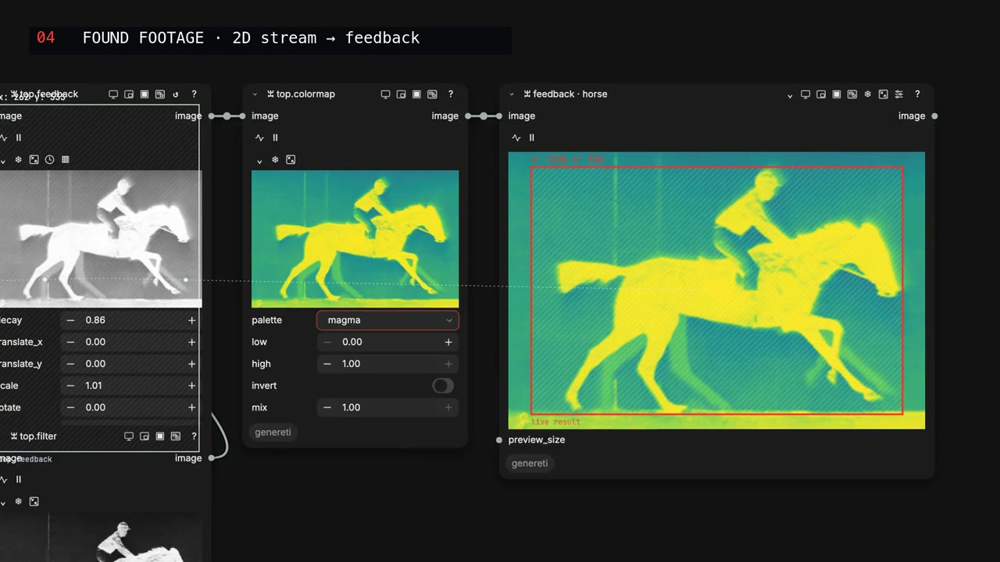
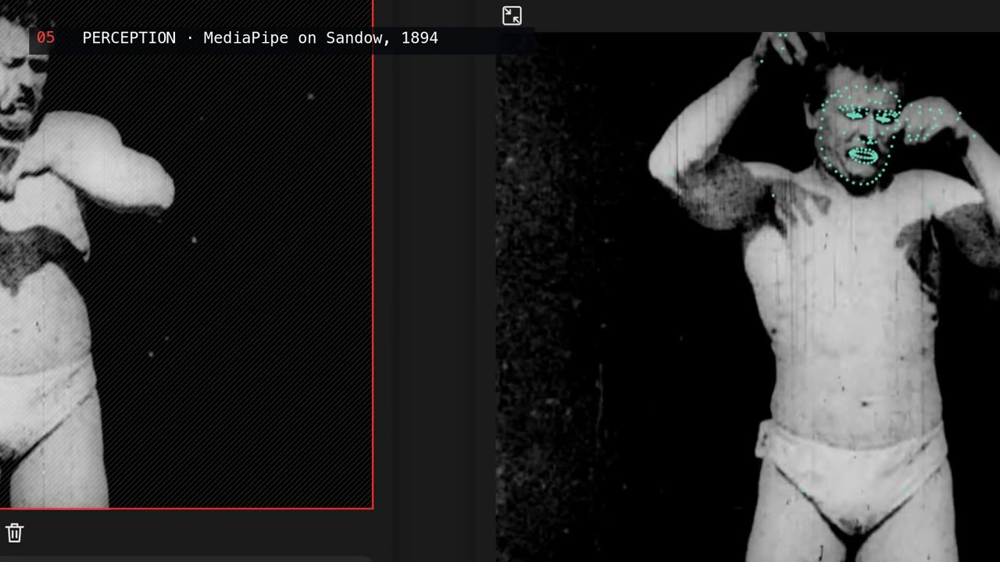
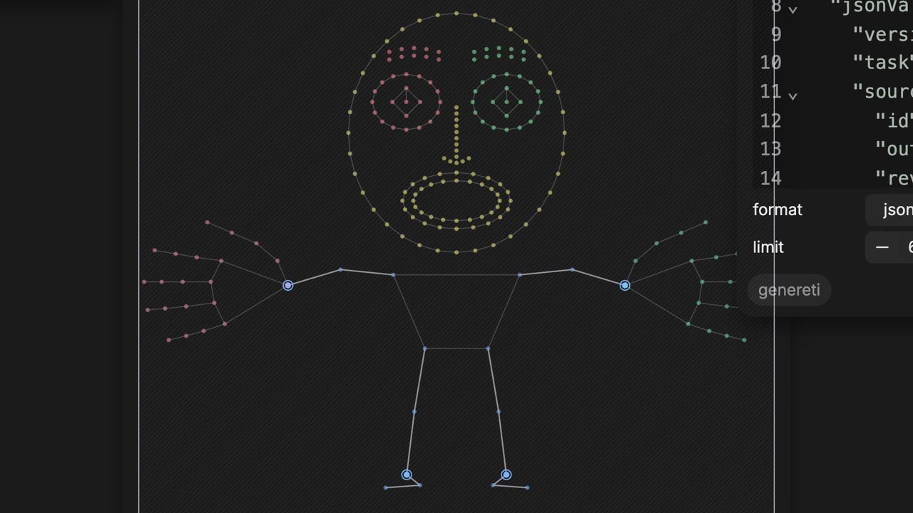
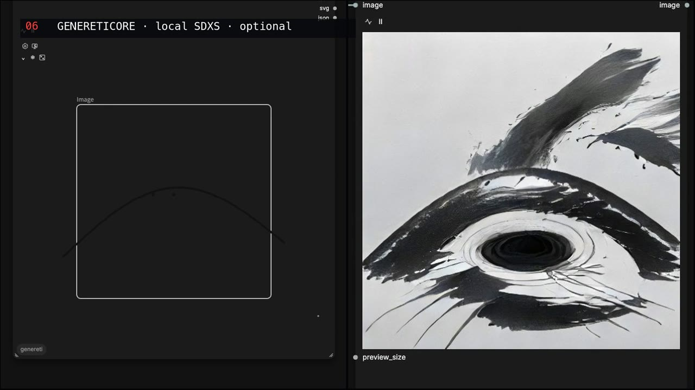
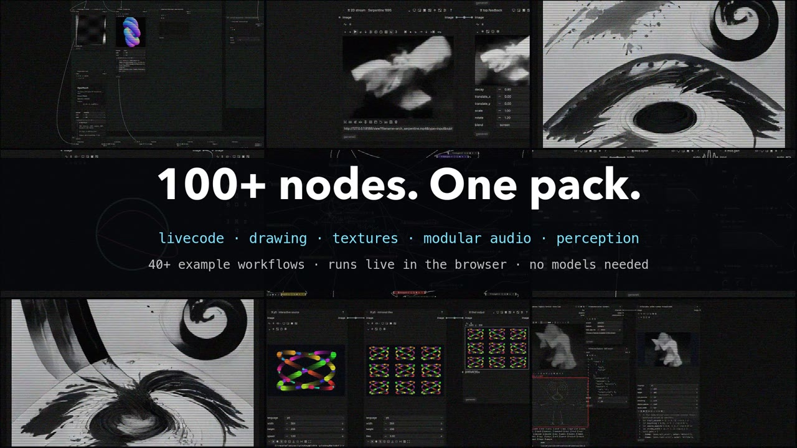

Live visuals, sound and code, as ComfyUI nodes.
1:03 · every shot recorded inside ComfyUI with Genereti; the music is a Genereti modular-audio patch.
Genereti turns ComfyUI into an instrument. Its nodes run live in the browser on WebGPU and Web Audio, instead of going through the render queue: you type code, draw, patch audio or point a camera at a film, and the graph answers every frame. The standard demos need no model downloads, no model server and no extra node packs.

p5, GLSL, Three.js, tixy, html, svg, orca, LaTeX, Markdown and more, edited live inside a node.

Sketches feed sketches: a p5 source into mirrored tiles into a live output, all as wires.

Transport, sequencers, drum kit, synths, filters, delays and a mixer, with cables that dance to the signal.

Excalidraw and Poliplan inside the graph, every stroke driving texture operators in real time.

Video, GIFs and images through feedback, colormap, bloom, displace and 30 texture operators.

MediaPipe pose, hands and face on film or camera, with a region picker for body, face and hands.

Pick torso, wrists, iris or lips and route their motion into sketches, sound or events.

Experimental local models on Apple silicon: draw, and an SDXS model answers live. Not needed for Genereti.

Lessons and performance patches ship with the pack under Workflows → Genereti.
git clone https://github.com/languel/genereti.git custom_nodes/genereti ./.venv/bin/python -m pip install -r custom_nodes/genereti/requirements.txt
mod.output.More: installation guide for Windows, Portable and Desktop.
Good first workflows: